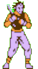
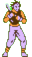
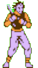
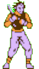

The AI-Player uses minimax algorithm to think and will try to win.
The AI-player chooses a random empty spot out of the next available spots after the Human Player has made the move.
The AI Player always chooses the next available empty spot.